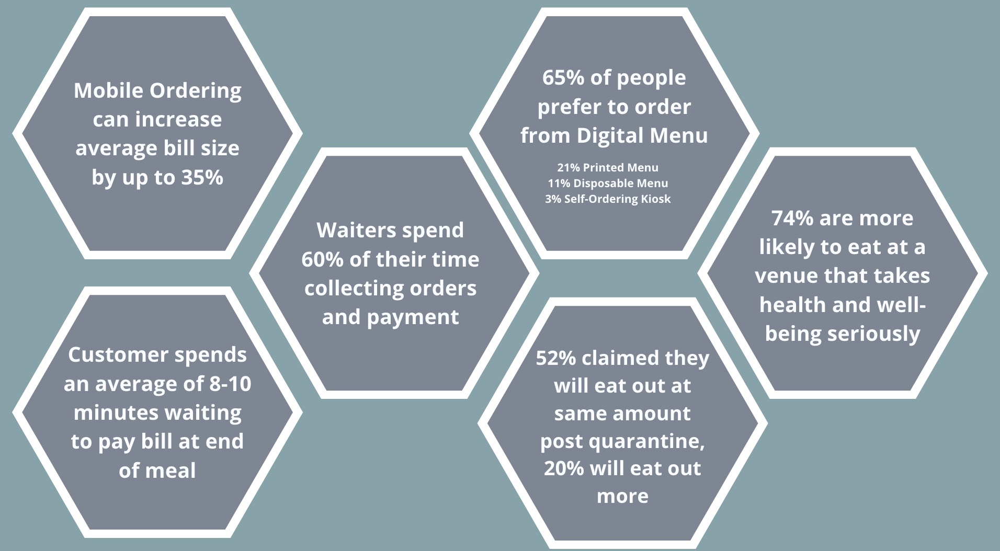

COVID-19 Relief for Restaurants.
The Covid-19 epidemic has severely impacted the restaurant industry already. So far the industry has suffered from 8 million lost jobs, a loss of 240 billion in expected revenue, and countless restaurants permanently closing their doors. According to Me&u’s recent report on consumer dining, restaurants will need to change to the “new normal.”
